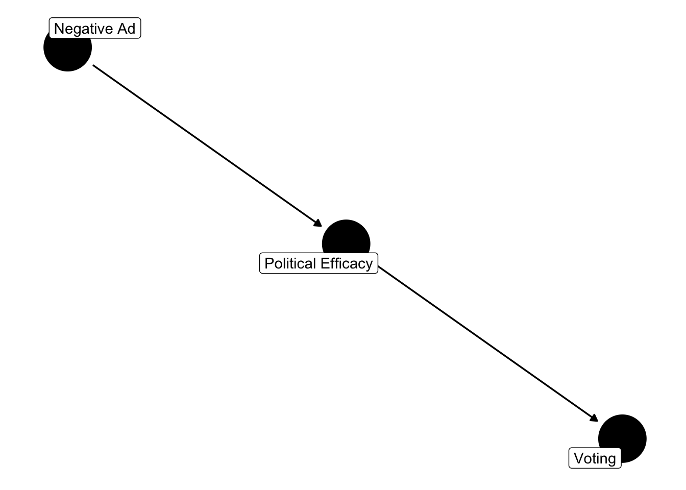

Chapter 11 Ignorability
When we think about truncation or censoring, notice this is a missing data problem. Our data are systematically missing for particular values. At this point, let’s more thorough consider the process that produces our data. Following Gelman et al (2014), assume we have a complete data set, \(y_{complete}\); though let’s assume that some values of \(y\) are missing. We don’t know if these values are systematically missing, but we have a vector of missing and non-missing values \(y_{observed}\) and \(y_{miss}\). Let’s assume that we then create an indicator, coded 1 if missing and 0 if observed. Now, \(I \in (0,1)\).
Often, we assume what is called ``ignorability’’ in our data. Data simply means we may safely ignore, or not model, the mechanism that produced the data (Gelman et al 2014, p.). Ignorability – which is suspect in the truncated or censored data – can be decomposed into two things, though here we only need consider 1 (the other will come in the missing data week).
\(\star\) Data are missing at random (MAR), which is:
\[p(I|x,y,\phi)=p(I|x,y_{observed},\phi)\]
Here, \(\phi\) represents the parameters that generate the missing data. MAR simply means that the only factors that predict missingness stem from the data and the parameters linking the data to missingness.
Borrowing Gelman et al’s (2014) example, consider income and tax auditing. We want to predict how well income predicts the likelihood of being audited. Now, assume that only people who make more than 10 million are audited.
Because I know exactly who is missing by the research design. Then,
\[p(I|x,y,\phi)=p(I|x,y_{observed},\phi)\]
which reads: Conditional on the data, I know the probability a data point is missing. MAR does not mean that the data are missing conditional on a single latent variable; it means that given the observed \(y\) and x, along with a set of parameters, we know the the probability of the full data set.
Now considering truncation and censoring, note why ignorability shouldn’t hold. The data are systematically missing by being greater (or less) than \(\tau\). Only conditional on \(\tau\) will ignorability hold.
This has the consequence of an error term that has a non-zero mean; or you might think about this as errors are correlated with predictor variables. In both cases, we observe that the estimates are both biased and inconsistent.
11.1 Distributions
Part of the problem with the above examples is that I am assuming normally distributed errors; yet the errors are not normal, if I’m systematically deleting or partitioning observations to be a certain value. It’s most useful to thin about censoring and truncation in terms of latent variables. If we assume that,
\[y_{observed} = \begin{array}{lr} NA, y_{latent}\leq\tau\\ y_{latent}, y_{latent}>\`\\ \end{array} \]
We can also assume that \(y_{latent}\sim N(\mu, \sigma^2)\). Thus, the pdf for \(y_{latent}\) is simply the normal density.
\[f(y_{latent}|\mu, \sigma)={{1}\over{\sigma}}\phi({{\mu-y_{latent}}\over{\sigma}})\]
And the cdf is
\[pr(Y_{latent}>y_{latent})=\Phi({{\mu-y_{latent}}\over{\sigma}})\]
But, if we only observe the latent variable when it is above or below a threshold, \(\tau\), we cannot assume that \(y_{observed}\) is normally distributed. Instead, we need to model the conditional probability of \(y\) given it is above (or below) \(\tau\). Just as we did with the truncated poisson density, we simply divide the pdf by the cdf, evaluated from \(\tau\) to \(\infty\).
So, if we only observe data greater than \(\tau\), then,
\[pr(y|y>\tau, \mu, \sigma)={{f(y_{latent}|\mu \sigma)}\over{pr(y_{latent}>\tau)}}\]
If we only observe data less than \(\tau\), then,
\[pr(y|y<\tau, \mu, \sigma)={{f(y_{latent}|\mu \sigma)}\over{pr(y_{latent}<\tau)}}\]
We’re again calculating a conditional probability; what is the probability of observing \(y\) given that \(y\) exceeds the truncation point. Just as was the case with the truncated poisson, this involves essentially re-partitioning the truncated portion of the distribution. In the context of a truncated normal (it need not be normal, we can do this with other densities), then:
\[{f(y|y>\tau, \mu, \sigma)}= [{{{1}\over{\sigma}}{\phi({{\mu-y_{latent}}\over{\sigma}})}}]/[{{{\Phi({{\mu-\tau}\over{\sigma}})}}}]\]
When I first learned this material, I had to stare at this a bit. The numerator is simply the normal pdf, but we are dividing by the normal cdf evaluated for the distribution greater than \(\tau\). Another way to see this is swap the denominator with \(1-\Phi{{\tau-\mu}\over{\sigma}}\). The part to the right of \(1-\) is simply the area to the ``left’’ of \(\tau\); yet, we need the remaining area, so we subtract that number from 1.
Let’s take the expectation of this pdf, as it yields an important statistic.
\[{E(y|y>\tau)}=\mu+\sigma {{\phi{{\mu-\tau}\over{\sigma}}}\over{\Phi{{\mu-\tau}\over{\sigma}}}}\]
Or, just simply, \(\mu+\sigma \kappa {{\mu-\tau}\over{\sigma}}\), with \(\kappa\) representing, \(\phi(.)/\Phi(.)\). In this case, \(\kappa\) is a statistic called the inverse Mill’s ratio.
Take the part in the parentheses. The numerator is the density evaluated at \({{\mu-\tau}\over{\sigma}}\). The denominator is the probability from \(\tau\) to \(\infty\) (for truncation from below).
What does this mean? If \(\tau\) is greater than \(\mu\), meaning we would have pretty serious truncation, then this ratio will be larger. Notice how the denominator gets smaller But, if \(\mu\) is much greater than \(\tau\) – that is, we don’t have much truncation – this ratio goes to zero and the truncated normal is the normal.
mills.function<-function(x){
return(dnorm(x,0,1)/pnorm(x, 0,1))
}
plot(seq(-2,2, length=100), mills.function(seq(-2,2, length=100)),
xlab="mu minus tau", ylab="Inverse Mills")
If \(\mu\) is greater than \(\tau\) (positive numbers), the inverse Mills ratio is smaller than when \(\mu\) is less than \(\tau\) (negative numbers).